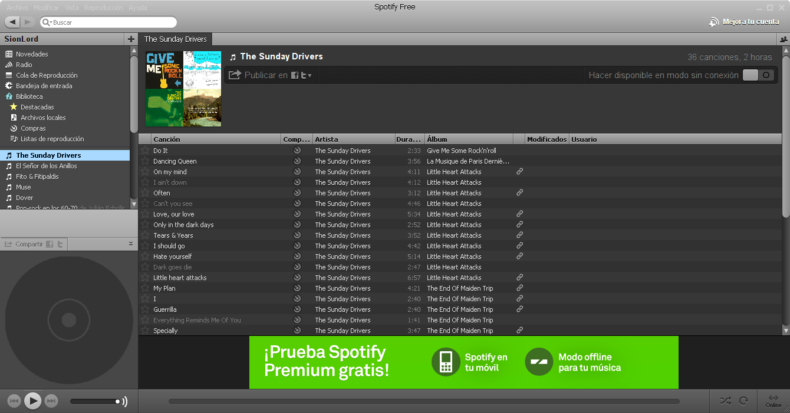
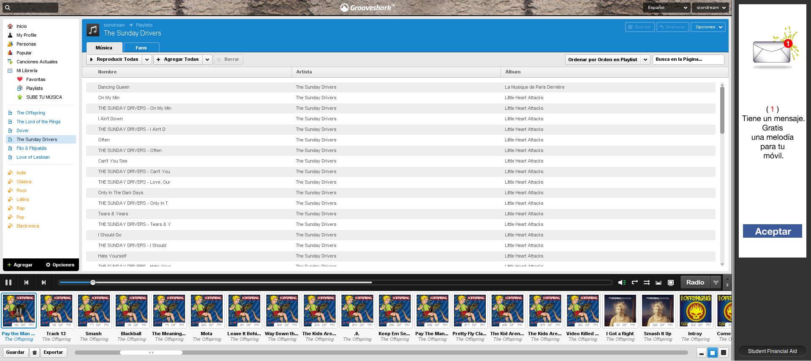
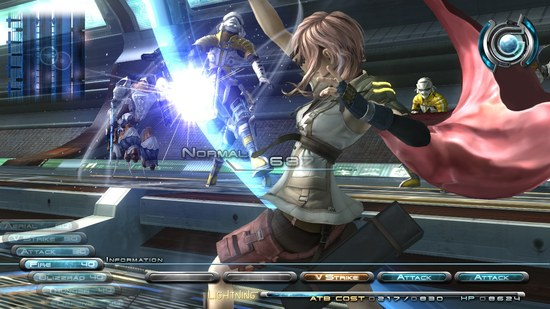

Nov 7, 2010 · 2 minute read · Comments
Hobbies
Los ojos de Julia se ha enfrentado a las obligadas comparaciones con el anterior largometraje de terror protagonizada por Belén Rueda, El orfanato. Ya saben, aquello de “la anterior era mucho mejor…”. Bah, pamplinas y lo dice alguien a quien le gustó mucho El orfanato. Hacía tiempo que todos los presentes de la sala se estremecían al unísono. Incluso algunos graciosos trataban de paliar su estrés soltando alguna ridícula burla en todo un alarde de testosterona. A continuación, unas breves impresiones.
Julia sufre una enfermedad degenerativa en la vista mientras que su hermana gemela ya se había quedado completamente ciega. Cuando ésta aparece colgada de una soga en el sótano de su casa Julia es la única que, irónicamente, ve más allá y piensa que su hermana no se ha suicidado. Entonces es cuando inicia una búsqueda solitaria por la oscuridad con el fin de aclarar la bruma que envuelve a la muerte de su hermana.
Los ojos de Julia nos pone en la piel de alguien que no ve en absoluto pero puede percibir una amenaza constante que otros no pueden ver. Funciona porque recurre al miedo más básico, el miedo a la oscuridad. No el tipo de oscuridad que se esfuma cuando encendemos la luz, hablamos de negrura permanente. Es posible que algo horrible esté ocurriendo a nuestro alrededor mientras sólo podemos imaginar. La mente nos juega malas pasadas, creemos que hay algo cuando en realidad no lo hay o viceversa.
Estamos ante un largometraje de tensión y sensaciones por el que merece la pena dejarse unos pocos euros. Sin lugar a dudas me ha dejado impresionado y puede que por ello me haya excedido ligeramente. Por favor, guarden el lanzamiento de tomates para los comentarios.
Nov 6, 2010 · 4 minute read · Comments
Computing
Llevo bastante tiempo utilizando Spotify en Linux a través de Wine y últimamente me estaba dando más disgustos que alegrías por problemas relacionados con el sonido. Raudo y veloz acudí a su alternativa más evidente, Grooveshark. En este artículo comentaré mi experiencia con ambos servicios de música por streaming de forma que puedan decidirse por alguno de los dos en caso de duda.
La aplicación
Spotify cuenta con clientes de escritorio compatibles con Windows y Mac. Hace poco tiempo han lanzado una beta del cliente para GNU/Linux pero sólo está disponible si eres usuario Premium. Como ya he mencionado, he estado utilizando la versión para Windows a través de Wine. El sistema es rápido y bastante intuitivo, buscar canciones es sencillo. Podemos guardar listas de reproducción, compartirlas y acceder a las búsquedas recientes. Desconozco su funcionamiento en Mac, en Windows funciona sin problemas y bajo wine falla mucho el sonido (aunque es posible que sea de mi tarjeta).

Grooveshark, en cambio, es una aplicación web escrita en ActionScript y Java lo que lo hace bastante más pesado que Spotify. Como ventaja, es compatible con todos los sistemas operativos en los que funcionen estos dos lenguajes de programación (prácticamente todos). En el fondo su interfaz es muy similar a la de Spotify, en este apartado andan a la par.

Catálogo de música
Spotify llega a acuerdos con las discográficas para poder distribuir sus canciones a través de su servicio. El catálogo es tremendamente amplio pero existen ausencias imperdonables como Led Zeppelin, AC/DC o The Beatles. A su favor hay que reconocer que la música está muy bien indexada, no hay duplicidades y sus metadatos (autor, álbum, año, etc) siempre son correctos. Navegar por los contenidos se hace muy cómodo
Por su parte, Grooveshark se vale de las canciones que suben los usuarios. La oferta es más rica aunque la catalogación es, en demasiados casos, deficiente. Si el usuario que sube la música comete errores en los metadatos, éstos permanecerán una vez las canciones se encuentren flotando en la nube. Si nos curramos listas de reproducción limpias o utilizamos las de nuestros amigos de confianza no tendremos problemas. No obstante, no es tan directo y elegante como en Spotify.
Vertiente social
Hoy en día si las aplicaciones no están conectadas con el “Feisbuk” no son nada y en esta ocasión no podía ser menos. Spotify nos ofrece conectarnos con nuestros amigos de la gran red social que usen el servicio. Esto nos permite acceder a sus listas de reproducción y descubrir grupos nuevos cada día. ¡También podemos comprobar si nuestro amigote “el duro” escucha Hannah Montana en secreto! El sistema está muy integrado en la aplicación y funciona de maravilla.
En Grooveshark podemos tener amigos pero son exclusivos de la aplicación, no podemos “importarlos” del exterior. Tenemos acceso a sus listas, canciones preferidas etc. La novedad de Grooveshark es que podemos escuchar “radios”, listas de reproducción que se componen de forma inteligente a través de un motor de recomendaciones que sigue las canciones que nos gusten.
Cuentas Premium
En Spotify tendremos que soportar horribles anuncios de vez en cuando a menos que pasemos por caja. Por 5€ al mes tenemos música ilimitada sin anuncios y por 10€ al mes podremos escuchar listas de reproducción offline y utilizar los clientes para plataformas móviles (Android, iPhone, Windows Phone y Symbian). No he utilizado ningún servicio de pago porque con la cuenta gratuita voy “sobrado” pero hay que reconocer que los precios no son desorbitados.
Grooveshark es más permisivo al respecto porque ¡no tiene anuncios sonoros! No tener interrupciones en la reproducción es de agradecer (en la interfaz sí tiene anuncios). Eso sí, podemos pagar 3€ al mes para utilizar los clientes móviles (Android y Blackberry) y disponer de ventajas como personalización de la interfaz y otras pijadas inmensas.
Conclusiones
Spotify ofrece un catálogo más controlado y ordenado mientras que Grooveshark no inserta anuncios en la reproducción de nuestras listas. Eso, junto con la amplia gama de música y su carácter completamente multiplataforma hace que haya elegido como servicio de música por streaming a Grooveshark.
¿Alguien prefiere Spotify? En tal caso le animo a que nos exponga sus razones.
Nov 4, 2010 · 2 minute read · Comments
Games development
Cuando entré en la carrera se estaba constituyendo la Asociación de Desarrollo de Videojuegos de la Universidad de Cádiz (ADVUCA). Como os podéis imaginar, era un tema que me interesaba muchísimo y asistí emocionado al taller que organizaron sobre desarrollo en Nintendo DS con PAlibs. Este fue uno de mis primeros pasos en la programación de juegos. Desgraciadamente, la asociación nunca llegó a formalizarse y quedó en el olvido. ¡Este año unos compañeros nos hemos animado para alcanzar el resurgir de la ADVUCA!
¿Quiénes somos?
Aún no hemos recibido el beneplácito de la administración pública pero estamos trabajando duro y con mucha ilusión para organizar actividades en la Universidad. Actualmente, la Junta Directiva la formamos:
- Presidente: David Saltares Márquez (¡ese soy yo!)
- Vicepresidente: Jose Marente Florín
- Secretario: Sebastián Guerrero Selma
- Tesorero: Alberto Cejas Sánchez
- Vocal: Javier Santacruz López-Cepero
Hasta que no tengamos respuesta del Registro de Asociaciones no podremos abrir la veda a inscripciones pero estamos deseando poder recibir socios. ### Objetivos
Como se podrá leer en nuestros estatutos nuestros principales objetivos son:
- Promover la creación de grupos de desarrollo de videojuegos interdisciplinares (diseñadores, programadores, artistas…).
- Generar y compartir documentación sobre desarrollo de videojuegos.
- Introducción y profundización en la programación a través de los videojuegos.
- Colaboración con profesores de las asignaturas de la carrera.
- Investigar y promover nuevas formas de ocio electrónico.
- (…) y muchos más.
No somos grandes expertos pero tenemos muchas ganas de crear una comunidad activa en el desarrollo de videojuegos dentro (y fuera) de nuestra Universidad. Por supuesto, seguiremos aprendiendo porque nos queda un larguísimo camino que recorrer.
Próximamente
Próximamente comentaré más novedades como el taller que estamos organizando y la página web actualmente en construcción. Mientras tanto, podéis seguirnos por Twitter en @advuca. Hala, con este grandioso “cliffhanger” termino por hoy y me despido.
Nov 1, 2010 · 4 minute read · Comments
Games development
En Sion Tower no quiero perder demasiado tiempo con papeleo pero necesito llevar cierta organización dada la mediana envergadura del proyecto, conozco el valor de la Ingeniería del Software. Debo definir cuantos detalles pueda y conseguir que las mecánicas estén enfocadas a los objetivos que deseo y no otros, que pocas cosas se coloquen por casualidad. Además, si pretendo contactar con artistas en busca de colaboraciones no puedo ir con las manos vacías, hay que mostrar al menos un documento o prototipo que demuestre lo que se necesita y que el asunto es serio. Ahí es donde entra en juego el Game design document.
¿Qué es el Game design document?
Como su propio nombre indica, es un documento en el que se recogen todos los detalles relativos al diseño del juego. Se especifican elementos como la jugabilidad, historia, personajes, posibilidades, entorno, ambientación etc. Es una especie de Especificación de Requisitos Software (ERS) bastante más laxo y orientado al mundo del videojuego. Comienza dando simples pinceladas sobre el juego que se va a modelar hasta llegar al máximo nivel de detalle, definiendo controles, pantallas de juego y mecánicas concretas. En él se plasman todas y cada una de las ideas que aparecerán en el juego.
¿Para qué sirve?
Se han escrito muchos artículos sobre los GDD y la lista de sus utilidades podría extenderse mucho por lo que, a continuación, listo algunas de ellas:
- Concretar ideas: podemos divagar largo y tendido sobre las características con las que contará nuestro juego pero sólo serán eso, divagaciones. En el momento de plasmar ese pequeño caos en un papel aclararemos nuestros pensamientos y los de nuestro equipo. Así mismo, podremos discernir (de forma muy preliminar) las buenas ideas de las malas.
- Estar en el mismo barco: no es extraño que entre compañeros de equipo comencemos a hacer un brainstorming y cada uno se vaya a su casa con una idea diametralmente opuesta del juego. Durante la elaboración del GDD detectaremos puntos de desacuerdo y podremos zanjarlos. De esta manera nos aseguramos de que todos los compañeros están en el mismo barco y tienen un objetivo común.
- Preparar el desarrollo: como en cualquier proceso de construcción de software, la fase de ingeniería nos prepara para la implementación. Gracias al GDD nos embarcaremos en etapas posteriores conociendo a la bestia a la que nos enfrentamos.
- Comunicación: tanto en desarrollos comerciales como el que nos ocupa en este momento la comunicación con el exterior es importante. En el caso de un juego comercial, el equipo querrá conseguir la financiación de una editora (o “publisher”). En mi caso, pretendo conseguir colaboraciones para el apartado artístico. Con el GDD puedo conseguir que la gente comprenda mi idea y compruebe que es un proyecto serio y no una mera bravuconada.
¿Por qué no un documento ERS?
En el proceso de desarrollo de un sistema más “convencional” suele utilizarse el clásico documento de Especificación de Requisitos Software. Es posible encorsetarse a un estándar o a otro pero lo cierto es que u**n videojuego es un sistema software “especial”. Si se mira cualquier guión de ERS nos daremos cuenta de que es muy complicado definir las mecánicas de un juego en los apartados disponibles.
La estructura de un Game design document no tiene porqué ser fija ya que no existe ningún estándar sobre el mismo. De hecho, suelen variar los puntos que tratan en función del género al que pertenezca el juego en cuestión. Este tipo de documento se acerca mucho más a mis necesidades para un desarrollo más ágil y tener una pequeña carta de presentación.
Mi escasa experiencia
En proyectos anteriores como Granny’s Bloodbath el equipo elaboró un documento de diseño aunque no teníamos tanta información sobre cómo hacerlo. Aún así, logramos definir el juego con mucho detalle, lo que nos ayudó enormemente en el desarrollo. Estuvimos medianamente organizados desde el principio y no perdimos el tiempo con discusiones, pues ya habíamos llegado a un acuerdo previamente.
Ahora tengo una pizca más de conocimiento sobre el Game design document y valoro más, si cabe, su utilidad. Como podréis comprobar en la forja del proyecto estoy trabajando en su redacción. La experiencia está siendo completamente positiva, me está ayudando a ordenar mis ideas y a concretarlas en papel. Cuando se está obligado a plasmar conceptos nos vamos dando cuenta de las cosas que podrían funcionar y de las ideas que son completamente absurdas.
Referencias
Para informarme sobre las generalidades y los detalles de los Game design documents he consultado los siguientes artículos. Los recomiendo encarecidamente a cualquier interesado en el tema, pues aportan mucha más riqueza sobre el tema que esta mísera parrafada:
Oct 29, 2010 · 4 minute read · Comments
Hobbies
Aunque lo terminé hacer un par de días, el decimotercer capítulo de la franquicia que más expectación genera se lanzó hace 8 meses. Ante las duras críticas que recibió, esperé a que alguna tienda online decidiese deshacerse desesperadamente del stock rebajándolo de forma considerable. Después de tanto tiempo es lógico que un artículo de estas características carezca de interés. No obstante, a lo largo de las líneas que siguen, ofrezco mi humilde opinión, libre de las ataduras de medios más politizados.
Lu"cie, Fal"cie… ¿Cómo?
La ciudad del Nido está gobernada por un organismo militar y religioso conocido como el Sanctum que trata de preservar el mundo de la region llamada Paals. El Gobierno se propone llevar a cabo una purga de ciudadanos que hayan entrado en contacto con Paals (algo así como el envío de judíos a campos de concentración nazis). En ese momento entra en juego Lightning, una soldado del Sanctum que se subleva cuando se disponen a “purgar” a su hermana Serah.
Hasta ahí tenemos una historia de religión, despotismo y lucha por los seres queridos. El problema es que las variables que manejan los guionistas son mucho más numerosas. Pronto empezamos a oír hablar de los Fal"cie, unos seres místicos que controlan a humanos llamados Lu"cie convirtiéndose en enemigos del Nido. Durante las primeras horas del juego no nos enteramos de mucho y sólo podemos ser meros espectadores de conversaciones y parrafadas que aparentemente no tienen sentido. La historia es interesante pero la forma de aparentar ser profunda confundiendo al jugador es un poco cutre.
Pasillos
Sin lugar a dudas lo más horroroso del juego es su linealidad. El juego es un compendio de pasillos sin bifurcaciones, combates y escenas cinemáticas. En la mayoría de casos, los escenarios cuentan con un espacio para avanzar de apenas 2 o 3 metros de ancho. Cuando vemos una desviación podremos asegurar que en un lado está el camino correcto mientras que el otro encontraremos un ítem y un muro infranqueable. La repetición de texturas y piezas del escenario es absolutamente descarada.
El juego no solo es lineal con respecto al camino a seguir sino que, además, las posibilidades que nos ofrece son muy reducidas. ¿Dónde quedan los minijuegos? En FFVIII y FFIX teníamos las cartas mientras que en FFX el Bliztball pero en esta ocasión no nos queda más que que avanzar, luchar y ver las secuencias (espectaculares, por cierto). Las misiones de eliminar enemigos no suponen un añadido sustancial. El hecho de no tener ciudades propiamente dichas en las que interactuar con los ciudadanos e incluso contar con las tiendas en los puntos de guardado le resta gracia y valor.
Cambio en el sistema de combate
No todo iba a ser negativo en este FFXIII, ¡por fin algo que me ha gustado! Square-Enix ha estado trabajando en adaptar el sistema de turnos clásico a los tiempos que corren con una mecánica más activa y, sobreponiéndose a la polémica suscitada, creo que lo ha conseguido. Durante los encuentros la acción se desarrolla en tiempo real y sólo controlamos a uno de los personajes. Tendremos que configurar distintas formaciones que determinarán las habilidades de cada personaje (apoyo, cura…) e ir intercambiándolas durante la batalla.
A pesar del rechazo inicial que me produjo controlar a un sólo combatiente, poco a poco me fue enganchando. Nos veremos obligados a pensar con celeridad controlando todos los aspectos de la contienda y configurar formaciones de roles equilibradas. No obstante (en FFXIII siempre hay un “pero”), hasta que no avanza el juego no adquiere profundidad suficiente.

¿Crisis en la industria japonesa?
No quiero dar la impresión de que FF XIII es un mal juego aunque parezca lo contrario. Los combates son divertidos y la historia no está nada mal pero en cuanto a riqueza de contenidos es más bien pobre y no es la única saga japonesa que no levanta cabeza. No puedo evitar la sensación de que no han sabido adaptarse a la actual generación. FFXIII cuenta con 5 años de desarrollo y aunque dura más de 40 horas abusa de la repetición y tiene un acabado encorsetado. Parece que a cambio de ofrecer buenos gráficos y efectos se han visto obligados en restarle posibilidades el jugador.
Mucho se ha hablado del tema pero ahora lo estoy experimentando por mí mismo. No he disfrutado de un J-RPG de verdadera calidad desde que me hice con la PS3 (algunos dirán que en X-Box 360 está Lost Oddisey). Puede que mi afición por el género haya disminuido y que me atraigan más el rol occidental de juegos como Oblivion, pero es un hecho.

Resumiendo
Algunos amigos me han preguntado sin realmente merece la pena. La respuesta es que pagar 70 euros por el es una locura pero desembolsar 20 no está mal. Desde luego no debería haber estado más abajo en mi lista de juegos pendientes. Les dejo que voy a echar una partida a Batman Arkham Asylum.